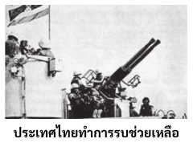
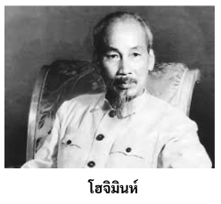
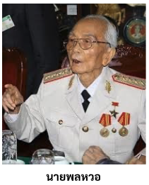
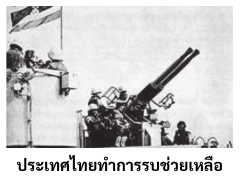
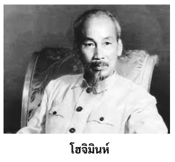
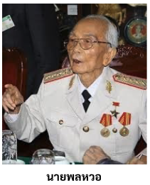

สงครามเวียดนามหรือสงครามอินโดจีนครั้งที่ 2 เกิดในช่วงปี 1954 -1975 เป็นผลสืบเนื่องมาจากความขัดแย้งอย่างยาวนานระหว่างฝรั่งเศสและเวียดนาม ในเดือนกรกฏาคม ปี 1954 ภายหลังกว่า 100 ปีของการปกครองแบบ อาณานิคม ฝรั่งเศสถูกผลักดันให้ออกจากเวียดนาม กองกำลังของคอมมิวนิสต์นำโดยนายพลหวอได้เอาชนะกองทัพพันธมิตรนำโดยฝรั่งเศสที่เดียน เบียน ฟู ซึ่งเป็นพื้นที่เชิงเขาแถบชนบททางทิศตะวันตกเฉียงเหนือของเวียดนาม สมรภูมิอันชี้ขาดในครั้งนี้ได้ทำให้ฝรั่งเศสเชื่อว่าพวกเขาไม่สามารถคงความเป็นเจ้าอาณานิคมเหนืออินโดจีนได้อีกต่อไป และกรุงปารีสก็เร่งรีบขอประกาศสงบศึก ขณะที่ทั้ง 2 ฝ่ายมาประชุมเพื่อเจรจาสันติภาพที่กรุงเจนีวา สวิตเซอร์แลนด์ เหตุการณ์ทั้งหลายก่อนหน้านี้ก็ได้กำหนดอนาคตของอินโดจีนไว้แล้วโดยมาจากสนธิสัญญาสันติภาพเจนีวาที่ลงนามโดยฝรั่งเศสและเวียดนามในฤดูร้อนปี 1954 แสดงให้เห็นถึงความตึงเครียดของสงครามเย็นที่แพร่ไปทั่วโลก มันถูกดำเนินการใต้เงามืดของสงครามเกาหลีที่เพิ่งจบสิ้นไปหมาด ๆ และยังเป็นสันติภาพที่น่ากระอักกระอ่วนใจสำหรับทั้งสองฝ่าย ด้วยแรงกดดันจากภายนอกคือสหภาพโซเวียตและสาธารณรัฐประชาชน ตัวแทนของเวียดนามต้องยอมให้มีการแบ่งประเทศตนออกเป็น 2 ส่วนชั่วคราวจากการใช้เส้นขนานที่ 17 เป็นตัววัด พวกมหาอำนาจของค่ายคอมมิวนิสต์กลัวว่าความไม่แน่นอนของสันติภาพจะทำให้ฝรั่งเศสและพันธมิตรที่เป็นมหาอำนาจคือสหรัฐอเมริกาโกรธแค้น ทางกรุงมอสโคว์และกรุงปักกิ่งไม่ต้องการจะเสี่ยงกับการเผชิญหน้ากับตะวันตกอย่างกระชั้นเกินไปหลังจากสงครามเกาหลี นอกจากนี้พวกคอมมิวนิสต์ยังเชื่อว่าพวกตนนั้นมีการจัดการองค์กรที่ดีกว่าในการเข้ายึดเวียดนามใต้ด้วยวิถีทางการเมืองเพียงอย่างเดียวตามมติของสนธิสัญญาเจนีวานั้น เวียดนามจะต้องมีการเลือกตั้งในปี 1956 เพื่อรวมประเทศเป็นหนึ่ง การแบ่งประเทศบนเส้นขนานที่ 17 นั้นจะหายไปกับการเลือกตั้ง สหรัฐฯและกลุ่มต่อต้านคอมมิวนิสต์จำนวนมากไม่ได้สนับสนุนสนธิสัญญานี้ รัฐมนตรีกระทรวงต่างประเทศคือนาย จอห์น ฟอสเตอร์ ดัลลัสคิดว่าข้อตกลงทางการเมืองของสนธิสัญญาฉบับนี้ให้อำนาจแก่พวกเวียดนามคอมมิวนิสต์มากเกินไป เขาจะไม่ยอมให้พวกคอมมิวนิสต์เข้ายึดเวียดนามใต้โดยปราศจากการสู้รบ ดังนั้นเขาและประธานาธิบดี ดไวท์ ดี ไอเซนเฮาวร์ ก็สนับสนุนกลุ่มในเวียดนามที่อยู่ใต้เส้นขนานที่ 17 ในการต่อต้านคอมมิวนิสต์ สหรัฐฯได้ส่งเสริมความพยายามครั้งนี้โดยการสร้างชาติเวียดนามใต้ผ่านข้อตกลงระหว่างชาติหลายฉบับอันก่อให้เกิดสนธิสัญญาเอเชียตะวันออกเฉียงใต้ ในปี 1954 สนธิสัญญาซีโต้ได้เสนอให้กลุ่มประเทศที่ลงนามมีการปกป้องซึ่งกันและกันทางทหารรวมไปถึงรัฐบาลของสาธารณรัฐเวียดนามหรือเวียดนามใต้
-7 พฤษภาคม 1954: ฝรั่งเศสพ่ายแพ้อย่างเด็ดขาดในยุทธการเดียนเบียนฟู
-21 กรกฎาคม พ.ศ. 2497: สนธิสัญญาเจนีวาสร้างการหยุดยิงสำหรับการถอนทหาร
ฝรั่งเศสออกจากเวียดนามอย่างสันติ
-พ.ศ. 2499 ประธานาธิบดีเดียมตัดสินใจต่อต้านการเลือกตั้งตามข้อตกลงเจนีวาเพราะฝ่ายเหนือจะ ชนะอย่างแน่นอน
-8 มิถุนายน พ.ศ. 2499: การเสียชีวิตครั้งแรกของชาวอเมริกันอย่างเป็นทางการคือจ่าสิบเอก Richard B. Fitzgibbon จูเนียร์ของกองทัพอากาศซึ่งถูกสังหารโดยนักบินชาวอเมริกันอีกคนในขณะที่เขาพูดคุยกับเด็ก ๆ ในท้องถิ่น
-11 มิถุนายน 2506 พระภิกษุ Thich Quang Duc จุดไฟเผาตัวเองต่อหน้าเจดีย์ในไซง่อนเพื่อประท้วงนโยบายของ Diem ภาพถ่ายการเสียชีวิตของนักข่าวเผยแพร่ทั่วโลกในชื่อ "The Ultimate Protest"
-2 พฤศจิกายน 2506: ประธานาธิบดีโง ดินห์ เดียม แห่งเวียดนามใต้ถูกประหารชีวิตในระหว่างการรัฐประหาร
-22 พฤศจิกายน 2506: ประธานาธิบดีเคนเนดีถูกลอบสังหาร ประธานาธิบดีคนใหม่ ลินดอน จอห์นสัน จะยังคงทวีความรุนแรงของสงครามต่อไป
-2 และ 4 สิงหาคม 2507: เวียดนามเหนือโจมตีเรือพิฆาตสหรัฐสองลำซึ่งนั่งอยู่ในน่านน้ำสากล (เหตุการณ์อ่าวตังเกี๋ย )
-7 สิงหาคม 2507: เพื่อตอบสนองต่อเหตุการณ์อ่าวตังเกี๋ย รัฐสภาคองเกรสแห่งสหรัฐอเมริกาผ่านมติของอ่าวตังเกี๋ย
-2 มีนาคม พ.ศ. 2508: ปฏิบัติการทิ้งระเบิดทางอากาศของสหรัฐฯ อย่างต่อเนื่องในเวียดนามเหนือเริ่มต้นขึ้น
-8 มีนาคม 2508: กองกำลังรบสหรัฐชุดแรกมาถึงเวียดนาม
-30 มกราคม พ.ศ. 2511: ชาวเวียดนามเหนือร่วมมือกับเวียดกงเพื่อเปิดตัวการรุกเทตโจมตีเมืองและเมืองเวียดนามใต้ประมาณ 100 เมือง
-16 มีนาคม พ.ศ. 2511: ทหารสหรัฐสังหารพลเรือนเวียดนามหลายร้อยคนในเมืองไหมลาย
ผู้ลี้ภัยหนีออกจากพื้นที่เติ่นเซินนุตหลังจากการโจมตีของเวียดกงเมื่อวันที่ 6 พฤษภาคม พ.ศ. 2511
-ธันวาคม 2511: จำนวนทหารสหรัฐในเวียดนามถึง 540,000 คน
-กรกฎาคม พ.ศ. 2512: ประธานาธิบดีนิกสันสั่งให้ทหารสหรัฐถอนทหารออกจากเวียดนามเป็นครั้งแรก
-3 กันยายน พ.ศ. 2512: ผู้นำการปฏิวัติคอมมิวนิสต์โฮจิมินห์ถึงแก่อสัญกรรมเมื่ออายุ 79 ปี
-13 พฤศจิกายน พ.ศ. 2512: ประชาชนชาวอเมริกันรู้เรื่องการสังหารหมู่ไม้ไหล
-30 เมษายน 2513: ประธานาธิบดีนิกสันประกาศว่ากองทหารสหรัฐจะโจมตีที่ตั้งของศัตรูในกัมพูชา ข่าวนี้จุดชนวนให้เกิดการประท้วงทั่วประเทศ โดยเฉพาะในวิทยาเขตของวิทยาลัย
4 พฤษภาคม พ.ศ. 2513 ทหารรักษาพระองค์ได้ยิงแก๊สน้ำตาใส่กลุ่มผู้ประท้วงที่ประท้วงการขยายเข้าไปในกัมพูชาในวิทยาเขตของมหาวิทยาลัยแห่งรัฐเคนท์ นักเรียนสี่คนถูกฆ่าตาย
-27 มกราคม พ.ศ. 2516: สนธิสัญญาสันติภาพปารีสลงนามและสร้างการหยุดยิง
-29 มีนาคม พ.ศ. 2516: กองทัพสหรัฐคนสุดท้ายถูกถอนออกจากเวียดนาม
-30 เมษายน พ.ศ. 2518 น้ำตกไซง่อนและเวียดนามใต้ยอมจำนนต่อคอมมิวนิสต์ นี่คือจุดสิ้นสุดของสงครามอินโดจีนครั้งที่สอง/สงครามเวียดนามอย่างเป็นทางการ
ประเทศไทยก็ได้ส่งไปช่วยเหลือการเข้าร่วมสงครามของประเทศไทยโดยเวียดนามใต้ได้ขอความร่วมมือจากรัฐบาลไทยให้ช่วยเหลือทางด้านการทหารและการเศรษฐกิจซึ่งในระยะแรกรัฐบาลไทยมีมติให้ความช่วยเหลือเฉพาะการฝึกนักบินไอพ่น โดยจัดส่งหน่วยบินลำเลียงทหารอากาศไทยในสาธารณรัฐเวียดนาม หรือ “หน่วยบินวิกตอรี่” ไปทำการฝึกให้กับนักบินสาธารณรัฐเวียดนาม ต่อมารัฐบาลสหรัฐอเมริกาตัดสินใจส่งกำลังทหารเข้าปฏิบัติการพร้อมกับกำลังของประเทศพันธมิตรอีก 7 ประเทศ คือ ออสเตรเลีย นิวซีแลนด์ สเปน ฟิลิปปินส์ เกาหลีใต้ สาธารณรัฐประชาชนจีน และไทย สงครามเวียดนามจึงได้เริ่มขึ้นตั้งแต่นั้นเป็นต้นมา ในปี 2507 กองทัพเรือส่งกำลังทางเรือไปปฏิบัติการลำเลียงและเฝ้าตรวจการณ์ตามชายงั่งชื่อว่า “หน่วยเรือซีฮอร์ส” ปี 2510 กระทรวงกลาโหมจัดส่งกรมทหารอาสาสมัครหน่วยแรกไปปฏิบัติการรบได้รับสมญานามว่า “จงอางศึก"
กลับไปยังหน้าแรก 




